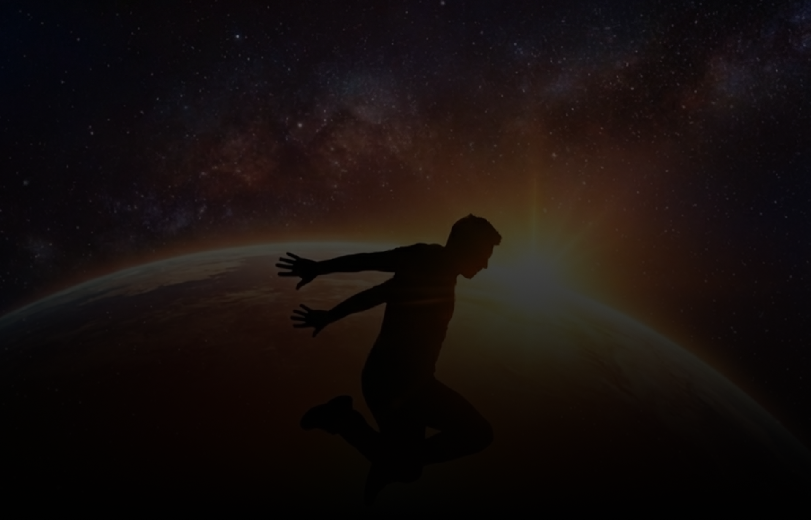
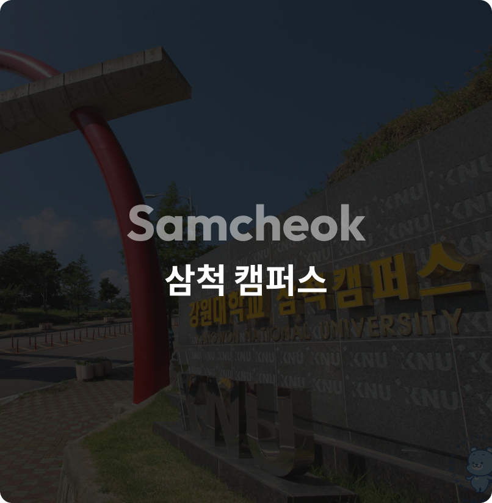
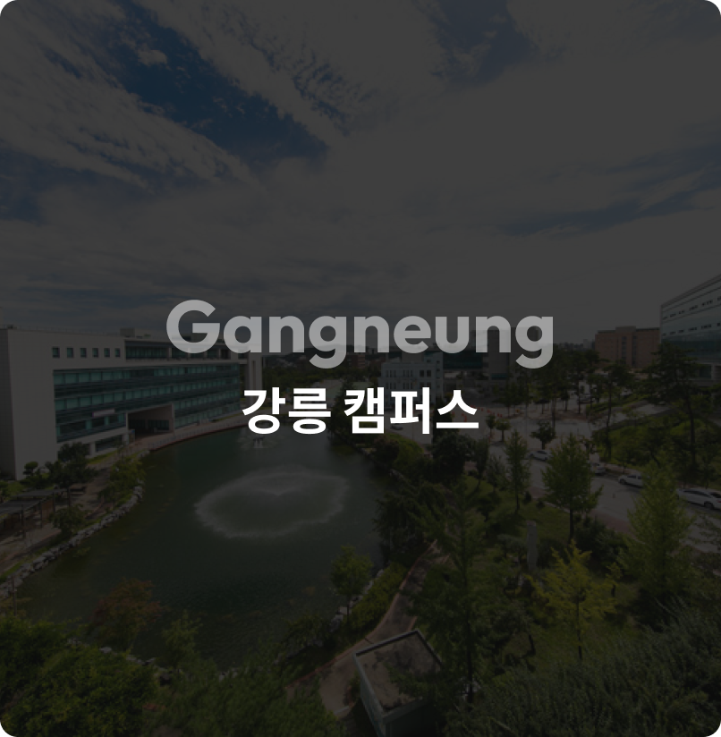
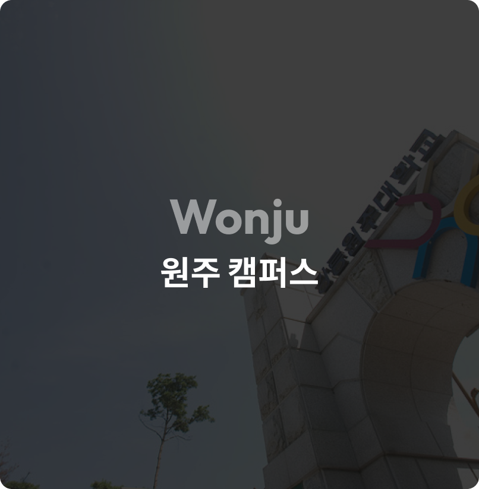
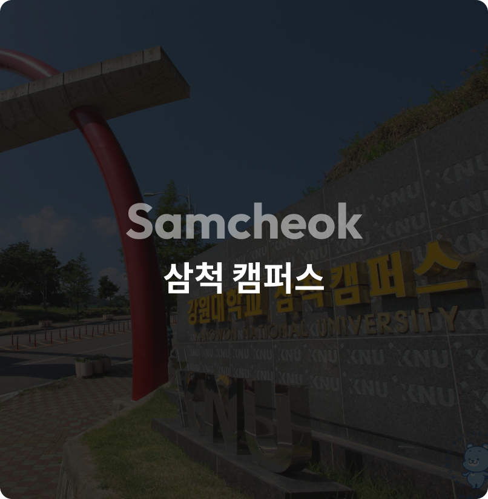
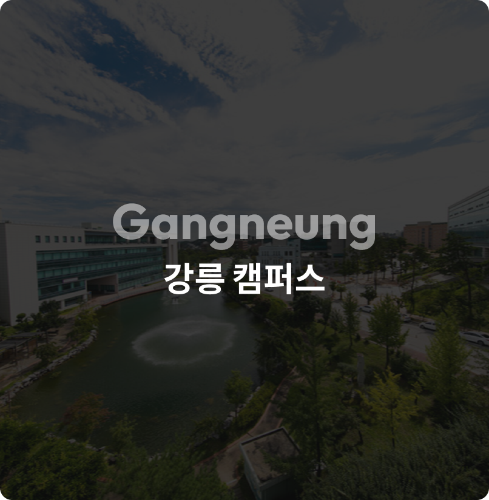
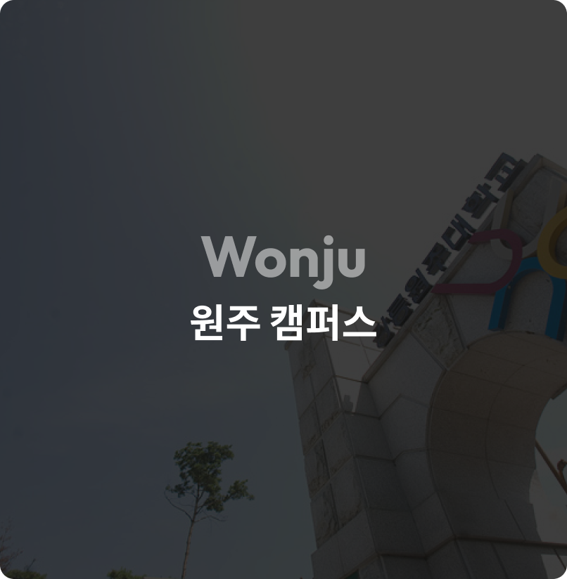

위대한
One knu
Multi Campus excellence!
도약
2026년 3월,
통합 강원대학교
공식 출범합니다
춘천 삼척 강릉 원주 4개의 캠퍼스가
하나의 비전으로 융합되어 글로컬 대학도시 로 힘차게 도약합니다.
강원 1도 1국립대학
위대한 도약
4개 캠퍼스의 시너지가 모여
글로컬 대학도시를 구현합니다
춘천 캠퍼스
강릉 캠퍼스
원주 캠퍼스
삼척 캠퍼스

흩어져 있던 캠퍼스의
힘을 하나로 모아,
힘을 하나로 모아,
지역을 넘어 세계로 나아가는
글로컬(Global + Local)
혁신대학을 구현합니다.
혁신대학을 구현합니다.
4개의 캠퍼스
하나의 미래
하나의 미래
캠퍼스를 소개합니다
춘천 캠퍼스
국제 교류 통합 체계 구축
학사구조 혁신 지원 온라인 교육 플랫폼
학사구조 혁신 지원 온라인 교육 플랫폼
 




